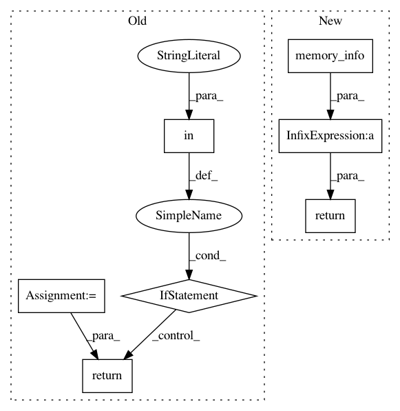

cfd5a0378d70e75891f47691b68a44c1c7bbbbe7,lazyflow/operators/arrayCacheMemoryMgr.py,,memoryUsageGB,#,44
Before Change
return 100 * (vmem.total - vmem.free) / vmem.total
def memoryUsageGB():
vmem = psutil.virtual_memory()
if "Linux" in platform.platform():
return (vmem.total - vmem.available) / (1.0e9)
return (vmem.total - vmem.free) / (1.0e9)
class MemInfoNode:
def __init__(self):
After Change
return lazyflow.AVAILABLE_RAM_MB * 1024**2
def memoryUsageGB():
return this_process.memory_info().rss / 1024**3
class MemInfoNode:
def __init__(self):
self.type = None
In pattern: SUPERPATTERN
Frequency: 3
Non-data size: 7
Instances
Project Name: ilastik/ilastik
Commit Name: cfd5a0378d70e75891f47691b68a44c1c7bbbbe7
Time: 2014-08-04
Author: bergs@janelia.hhmi.org
File Name: lazyflow/operators/arrayCacheMemoryMgr.py
Class Name:
Method Name: memoryUsageGB
Project Name: ilastik/ilastik
Commit Name: cfd5a0378d70e75891f47691b68a44c1c7bbbbe7
Time: 2014-08-04
Author: bergs@janelia.hhmi.org
File Name: lazyflow/operators/arrayCacheMemoryMgr.py
Class Name:
Method Name: memoryUsagePercentage
Project Name: erikbern/ann-benchmarks
Commit Name: 71c747c0b3a1a99ab084cc206e7f5fe125f32654
Time: 2017-12-17
Author: mail@erikbern.com
File Name: ann_benchmarks/algorithms/base.py
Class Name: BaseANN
Method Name: get_index_size